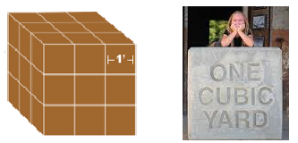
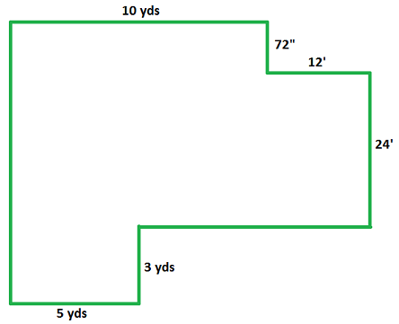

I have been struck again and again by how important measurement is to improving the human condition.
Bill Gates
Subsection3.3.1Length
How tall are you? Most people know their height in feet and inches. The tallest person recorded in the Guinness Book of World Records is Robert Wardlow, who lived from 1918 to 1940. He was 8 feet 11 inches tall.
The English units of length evolved from early systems that used body parts as measuring devices. Length was first measured with the forearm, hand, or finger.
An inch was the length of your fingers second joint.
A foot was about the length of a forearm (or foot, if you have big feet.)
According to legend, King Henry I decreed that a yard would be the distance from the tip of his nose to the end of his thumb.
Many everyday measurements are given in inches, feet, or yards, and it is easy to convert from one unit to another. For example, to convert from feet to inches, we multiply by 12, as we did in Example 3.3.1. To convert from inches to feet, we divide by 12.
If its not clear whether we should multiply or divide, we can use a conversion factor to help us decide. A conversion factor is just a fraction that is equal to 1. For example,
are conversion factors. We choose the factor that "cancels out" the old units and leaves us with the units we want. Such conversion factors are also called unit fractions.
Example3.3.4.
The basketball player Yao Ming is 90 inches tall. Convert 90 inches to feet.
Solution.
Well use a conversion factor. Because 1 foot = 12 inches, the two fractions
are both equal to 1. We can multiply 90 inches by either fraction without changing its value. Wed like to eliminate inches and end up with feet, so we choose the second factor.
NBA basketball star Andrew Bynum is 7 feet tall. His stride length is approximately 1 yard. How many steps would he take to walk a mile? (Hint: 1 mile = 5280 feet. Convert feet to yards.)
Answer.
1760
Subsection3.3.2Metric Units
We can also measure length in the metric system, which is based on a length called a meter. One meter is a little longer than a yard. (You can review some other metric units in Section 2.1.)
One mile is equal to 1760 yards. How many meters are in one mile?
Answer.
Approximately 1605.4 meters.
Note3.3.8.
The only countries in the world that have not officially adopted the metric system of measurement are the Unites States, Liberia, and Myanmar.
In the metric system, a meter serves the same purpose as a yard. For smaller lengths, we use centimeters (cm). There are one hundred centimeters in 1 meter. Here is a picture of a ruler marked in both centimeters and inches. Notice that each centimeter is divided into 10 smaller units called millimeters (mm).
Example3.3.9.
The label on a picture frame says it is 65 centimeters wide. How many meters is that?
What is the approximate width of the picture frame in English units?
Solution.
To convert centimeters to meters, we can multiply 65 centimeters by a unit fraction.
0.65 meter is approximately \(\dfrac{2}{3}\) meter, and a meter is approximately one yard, or 3 feet, in length. So \(\dfrac{2}{3}\) meter is about 2 feet. The picture frame is about 2 feet wide.
Checkpoint3.3.10.
The actress Jane Lynch is 6 feet tall. What is her approximate height in meters? In centimeters?
Answer.
Approximately 1.82 meters or 182 centimeters.
How does a centimeter compare to an inch? A centimeter is a little less than half an inch in length; about the width of the nail on your index finger.
As you can see in the table above, the conversion factors in the metric system are all powers of 10. This property makes the metric system easy to use, because we can convert between units simply by moving the decimal point. For example,
Or you could notice that a 10K race is about 6.2 miles and then divide by 2 to find the length of a 5K race. Either way, a 5K race is about 3.1 miles long.
Checkpoint3.3.15.
The speed limit on expressways in Canada is 110 kilometers per hour. What is the speed limit in miles per hour?
Answer.
About 68 mph
Subsection3.3.3Area and Volume
Recall that we measure area in square units and volume in cubic units. In Activity 3.3.1 well see how to convert between different units of area or volume.
Activity3.3.1.Area and Volume.
How many square feet are there in a square yard? The lines on the grid below represent feet. In the upper left corner of the grid, draw a square yard, that is, a square that measures one yard on each side.
What is the difference between "2 square yards" and "a 2-yard square"? On the grid above, draw 2 square yards that touch along one edge. Then draw a square that measures 2 yards on each side. Are they the same? How many square yards are in a 2-yard square?
Karins living room is 18 feet long by 12 feet wide. What is its area in square feet?
Carpet is sold by the square yard. How many square yards of carpet does Karin need for her living room?
How many square inches are there in a square foot? The lines on the grid below represent inches. Draw a square that measures 1 foot on each side.
Do you see a pattern in how to convert one square unit to another? Use your discovery to calculate the number of square inches in one square yard.
Daisy would like to cover the bulletin board in her classroom with butcher paper. The bulletin board measures 99 inches long by 48 inches tall. What is the area of the bulletin board in square inches?
What is the area of the bulletin board in square feet?
What is the area of the bulletin board in square yards?
How many cubic feet are there in a cubic yard? Here is a picture of a cubic yard, with its sides marked in feet.

Now imagine a cubic foot, with its sides marked in inches. It will have 12 layers, each 1-inch thick, and each layer will be a square that is 12 inches by 12 inches. How many cubic inches are in each layer? How many cubic inches are in the whole cubic foot?
In the construction industry, building materials such as gravel or wood chips are often measured in "yards," but they really mean cubic yards.
At the U-Do-It store, gravel is sold in units of 0.25 (cubic) yards. Rezas driveway is 6 feet wide and 20 feet long. How many (cubic) yards of gravel should he order to cover the driveway 4 inches thick?
Subsection3.3.4Liquid Measure
Liquids are measured in volume or capacity units based on the fluid ounce.
There are 2 tablespoons in 1 fluid ounce, and we see that 30 cc is just a little over 1 fluid ounce, so one dose of cold medicine is just over 2 tablespoons.
Checkpoint3.3.19.
A large dog like Brandi, the Saint Bernard, should be given 2.5 cc of heartworm medication. How many doses are in a 1 liter bottle of the medication?
Answer.
400
Activity3.3.2.Unit Conversions.
Fill in the blanks with the correct conversion values. (You can find all the answers in the text for this Section!)
Answer the questions in Problems 1-10 with complete sentences.
1.
What is a conversion factor, and what is it used for?
2.
What is a unit fraction, and why is it called that?
3.
A meter is about the same length as which unit in the English system?
4.
How many centimeters are there in a meter?
How many millimeters are there in a meter?
6.
Which metric unit is about 0.6 mile in length?
7.
Draw a sketch showing why there are 9 square feet in 1 square yard.
8.
Explain why there are 27 cubic feet in 1 cubic yard.
9.
One liter is almost the same as which English measure of capacity?
10.
Why is a milliliter sometimes called a cc?
Exercise Group.
For Problems 11-14, convert units to fill in the blanks.
11.
24 in = ft
24 ft = yd
66 in = ft
16 ft = yd
18 in = yd
8 in = ft
12.
360 in = ft
72 ft = yd
30 in = ft
38 in = yd
108 in = ft
108 in = yd
13.
16 qt = gal
16 pt = qt
5 c = pt
5 pt = qt
20 pt = gal
20 c = qt
14.
3 c = qt
9 c = qt
18 c = gal
40 pt = gal
50 qt = gal
100 c = qt
Exercise Group.
For Problems 15-24, show your work.
15.
The basketball player Lebron James is 6 feet 8 inches tall.
Express his height in inches.
Express his height in feet.
Express his height in yards.
16.
The California condor has a wingspan up to 9 feet 9 inches.
Express the wingspan in inches.
Express the wingspan in feet.
Express the wingspan in yards.
17.
On U.S. airlines, carry-on baggage may not exceed 45 inches in combined length, width and height. What is that number in centimeters?
18.
The official length of a C-Class racing catamaran is 25 feet. What is that length in meters?
19.
An Olympic swimming pool is 50 meters long. How long is that in feet?
20.
The distance from Paris to Versailles on the A86 road is 28 kilometers. How far is that in miles?
21.
How many centimeters are there in one foot?
Frank Zappa is 6 feet tall. Convert his height to centimeters.
22.
How many millimeters are there in one inch?
The average length of a ladybug is 8 millimeters. What is that length in inches?
23.
Necklaces come in standard lengths as shown in the figure below. Complete the table by converting each length, given in centimeters, to inches. Round your answers to the nearest quarter inch.
Necklace
Length (cm)
Length (in)
Collar
32
\(\hphantom{000000}\)
Choker
38
\(\hphantom{000000}\)
Princess
45
\(\hphantom{000000}\)
Matinee
56
\(\hphantom{000000}\)
Opera
78
\(\hphantom{000000}\)
Lariat
120
\(\hphantom{000000}\)
24.
Complete the table by converting the wrench sizes to metric. Round your answers to the nearest millimeter.
Wrench size (in)
Wrench size (mm)
1/8
\(\hphantom{000000}\)
1/4
\(\hphantom{000000}\)
3/8
\(\hphantom{000000}\)
1/2
\(\hphantom{000000}\)
5/8
\(\hphantom{000000}\)
3/4
\(\hphantom{000000}\)
Exercise Group.
For Problems 25-28, complete the table.
25.
The blackboard is 9 feet wide and 6 feet tall.
26.
A table top is 18 inches wide and 3 feet long.
27.
The side wall is 12 feet tall and 6 yards wide.
28.
The dishwasher is 24 inches wide and 30 inches tall.
29.
The area of the new exercise room at the gym is 800 square feet. You are in charge of buying carpet for the room. How can you convert this area to square yards?
30.
The area of a sofa cushion is \(2\dfrac{1}{4}\) square feet. How can you convert this area to square inches?
Exercise Group.
For Problems 31-40 about area, show your work.
31.
A 1200-square-foot apartment at Tivoli Square costs $850 per month. For the same price you can get an apartment at Lakeview Centre that has 135 square yards of floor space. Which apartment gives you more room for your money?
32.
At Carpet World, Softwist carpet costs $3.42 per square foot. At Home Flooring the same carpet costs $31.28 per square yard. Which store offers the better deal?
33.
How many square inches are in a square yard?
You have a square piece of felt that measures 9 inches on a side. What fraction of a square yard is that?
34.
How many square yards are in a square mile?
A square corn field measures 669 yards on a side. What fraction of a square mile is that?
35.
How many square yards are there in one square meter? How many square feet are in one square meter?
You see a floor plan you like for a house of area 220 square meters. How large is that in square feet?
36.
How many square centimeters are in one square inch?
The international standard size for typing paper is called A4. A sheet of A4 paper measures 210 millimeters by 297 millimeters. What is its area in square centimeters?
What is the area of a sheet of A4 paper in square inches?
In the U.S., typing paper measures \(8\dfrac{1}{2}\) by 11 inches. What is the area of a sheet of U.S. typing paper?
37.
How many 16-inch square tiles will it take to tile a kitchen floor that is 12 feet wide and 18 feet long?
38.
The figure at right is made of tangrams, a game that uses geometrical shapes. The piece labeled A is 1 square centimeter.
Find the areas of the 6 other pieces in the figure.
What is the area of the whole figure?
Will the figure fit into a square of area 2.25 inches?
39.
What is the difference between "6 square centimeters" and "a 6-centimeter square"? Illustrate your answer with a sketch.
40.
Which is larger: a square yard, or a 100-centimeter square? By how much?
41.
The figure below compares the average home size in various countries. The amount of floor space is given in square meters. Complete the table by converting the figures to square feet. For the last column, round your answers to hundredths.
Country
Home size (sq m)
Home size (sq ft)
Fraction of US Home size
USA
214
\(\hphantom{000000}\)
\(\hphantom{000000}\)
Australia
206
\(\hphantom{000000}\)
\(\hphantom{000000}\)
Denmark
137
\(\hphantom{000000}\)
\(\hphantom{000000}\)
France
113
\(\hphantom{000000}\)
\(\hphantom{000000}\)
Spain
97
\(\hphantom{000000}\)
\(\hphantom{000000}\)
Ireland
88
\(\hphantom{000000}\)
\(\hphantom{000000}\)
UK
76
\(\hphantom{000000}\)
\(\hphantom{000000}\)
42.
Building tiles come in various sizes, depending on their use and composition. Complete the table showing some common tile sizes.
Use
Size (in)
Area (sq in)
Size (cm)
Area (sq cm)
Floors (travertine)
24 x 24
\(\hphantom{000000}\)
\(\hphantom{000000}\)
\(\hphantom{000000}\)
Floors (granite)
16 x 16
\(\hphantom{000000}\)
\(\hphantom{000000}\)
\(\hphantom{000000}\)
Walls
12 x 12
\(\hphantom{000000}\)
\(\hphantom{000000}\)
\(\hphantom{000000}\)
Countertops
6 x 6
\(\hphantom{000000}\)
\(\hphantom{000000}\)
\(\hphantom{000000}\)
Showers
4 x 4
\(\hphantom{000000}\)
\(\hphantom{000000}\)
\(\hphantom{000000}\)
Exercise Group.
For Problems 43-52 about volume, show your work.
43.
How any cubic feet are in 4 cubic yards?
How many cubic yards are in 81 cubic feet?
44.
Is a cubic meter bigger or smaller than a cubic yard?
Is a cubic centimeter bigger or smaller than a cubic inch?
45.
How many square centimeters are in a square meter?
How many cubic centimeters are in a cubic meter?
46.
How many square meters are in a square kilometer?
How many cubic meters are in a cubic kilometer?
47.
Jazmins garden is 36 feet long by 24 feet wide. How many (cubic) yards of wood chips should she order to cover the garden 3 inches deep?
48.
A rental dumpster holds 2 cubic yards of trash. It is 74 inches long and 40 inches wide. How tall must it be?
49.
How many liters of water does it take to fill a cubic meter? (Hint: How many cubic centimeters are there in a cubic meter?)
50.
The reflecting pool at the Lincoln Memorial in Washington, D.C. is 2029 feet long, 167 feet wide, and 30 inches deep. How many cubic feet of water does it hold?
One cubic foot of water is about 7.48 gallons. How many gallons of water does the reflecting pool hold?
51.
Here is the footprint for a new house.

Fill in the missing dimensions and find the area of the floor.
The concrete foundation will be 2 feet deep. How many cubic yards of concrete will be used?
52.
The Wongs plan to have insulation blown into the attic of their house, shown below.
Fill in the missing dimensions and find the area of the ceiling.
The insulation will be 9 inches deep. How many cubic yards of insulation will they need?
Exercise Group.
Problems 53-60 explore some other units of measurement.
53.
One acre is 43,560 square feet. How many acres are there in one square mile?
How many acres are there in one square kilometer?
How many square yards are in one acre?
54.
Scientists monitor the extent of arctic sea ice as a measure of climate change. In January, 2015, there were 13.14 million square kilometers of arctic sea ice. What is that area in square miles?
55.
One hectare is 10,000 square meters. How many hectares are there in one square kilometer?
How many hectares are there in one square mile?
How many acres are there in one hectare?
56.
The total land area of planet Earth is just over 136 million square kilometers. There are 141 million hectares of arable land on Earth; that is, land used to grow crops.
How many square kilometers of arable land are there on Earth?
What percent of the land mass of Earth is arable?
57.
Here are some units of volume once used in England. How is this system of units similar to the metric system?
2 gills = 1 cup
2 cups = 1 pint
2 pints = 1 quart
2 quarts = 1 pottle
2 pottles = 1 gallon
2 gallons = 1 peck
58.
One fathom is equal to 6 feet in length, and one furlong is equal to 220 yards. How many fathoms in a furlong? (Fathoms were used for measuring the depth of water, and a furlong was the length of one furrow for planting crops.)